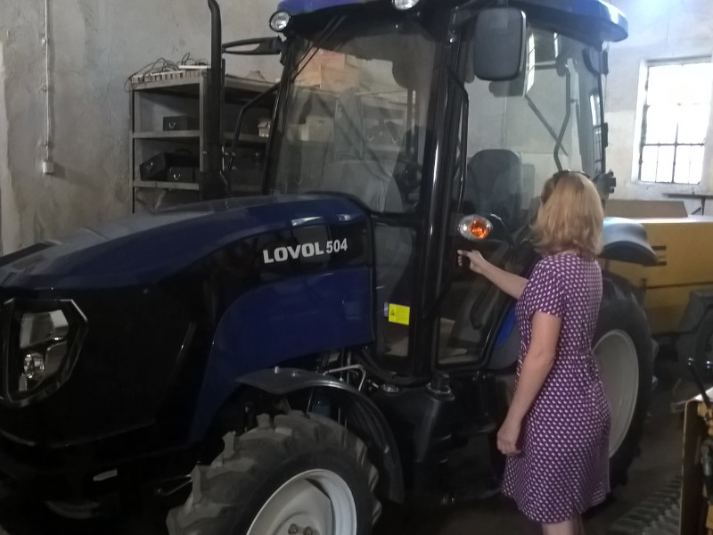

Przedsiębiorstwo Wielobranżowe ROTOPOL istnieje od 1993 roku.
Specjalizujemy się w wykonywaniu przewiertów, przecisków i zgrzewaniu
rur PE. Oferujemy również inne usługi związane z infastrukturą
podziemną.
Wieloletnie doświadczenie
Od początku działalności zajmujemy się wykonawstwem przewiertów i
przecisków. Jesteśmy firmą, która jako jedna z pierwszych w regionie
i w kraju zaczęła wykonywać tego rodzaju usługi.
Wysokiej jakości sprzęt
Posiadamy wysokiej jakości sprzęt, który pozwala na profesjonalne
wykonanie usług.
Gwarancja zadowolenia
Duże doświadczenie i jakość sprzętu pozwala nam na szybkie i sprawne
wykonanie usług, przynosząc zadowolenie naszym klientom.

Usługi
Przewierty sterowane
Wykonujemy przewierty sterowane pod przeszkodami terenowymi typu
drogi, rzeki, tory, place, itp. różnymi wiertnicami w zakresie
średnic od najmniejszych do średnicy fi 600 mm. I długości do 300
mb. Dla wykonania tych usług posiadamy pięć różnych maszyn
przewiertowych.
Przeciski
Wykonujemy przeciski rurami plastikowymi o średnicy do 150 mm i
przeciski rurami stalowymi do średnicy 1200 mm. Przeciski wykonujemy
urządzeniami typu kret i typu młot pneumatyczny. Posiadamy osiem
różnych różnych urządzeń i cztery kompresory o szerokim spektrum
wydajności.
Zgrzewanie rur PE
Zgrzewamy rury doczołowo i elektrooporowo wieloma typami zgrzewarek.
Inne usługi
Podejmujemy się wykonawstwa różnych usług nietypowych związanych z
branżą budowlaną i robotami pod infrastrukturę podziemną.